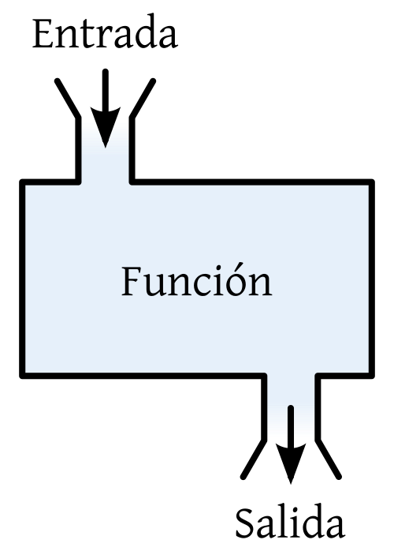

Funciones
Muy importante funciones muy importante.
Qué es una función? así como concepto?
Podemos entender el concepto de función desde muchos prismas diferentes. Nosotros vamos a entender una función como:
Una caja negra (que hace cosas internamente). Nosotros le pasamos una entrada a la caja, varios valores si se desea y la función nos devuelve algo a la salida.

Importante
La salida de una función solo puede ser 1 única variable, pero ya veremos que estas variables pueden contener más valores en su interior. Pero el resumen: 1 variable o más de entrada y solo 1 variable de salida.
Por ejemplo puedo tener una función que sume dos números. En este caso la entrada serían dos variables numéricas y la salida sería 1 variable numérica.
Funciones en GDscript
Para hacer esto en GDScript tenemos que atender a la sintaxis que se usa para escribir la cabecera de una función:
func <nombre funcion> ( <variables de entrada> ) -> <tipo de variable salida> :
Las variables de entrada serán especificadas con su tipo correspondiente como cuando declaras una variable, pero no necesitas escribir var. Ejemplo: a: int, b: int, c: String. Estas 3 sería un formato adecuado para las variables de entrada de una función. Esto significa que la funcion pide para funcionar 2 ints y 1 string.
Ejemplo en GDScript
Siguiendo el ejemplo de la función suma, en GDScript se implementaría así:
return- Esta clausula nos hace salir de la función devolviendo lo que sigue al return.
return "hola"devolvería la cadena "hola".
Warning
Si la función pone que debe devolver un int, NO puedes devolver otra cosa que no sea un int. Hay casos concretos donde podrás devolver tipos diferentes, pero se debe especificar.
También podemos devolver directamente una expresión en lugar de una variable, lo que puede ayudarnos a hacer código más conciso y simple. Ejemplo: